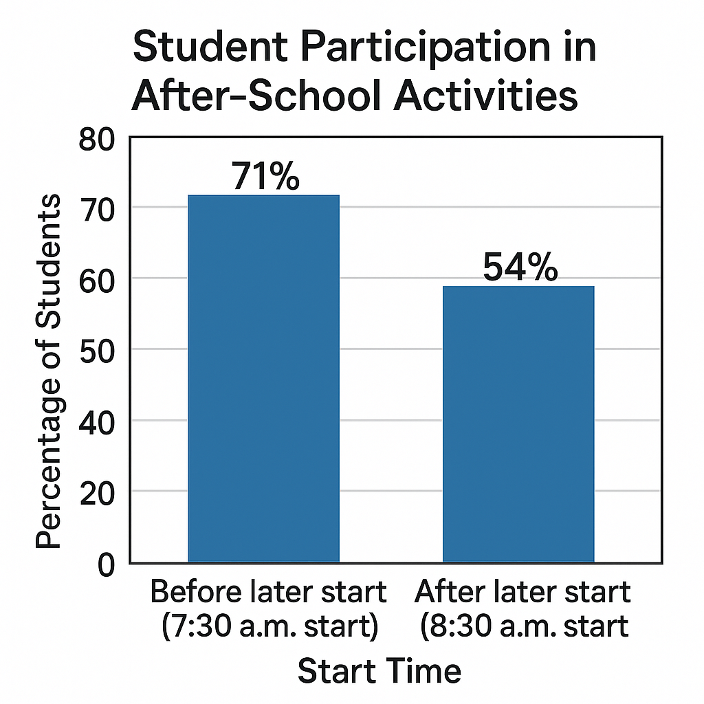

1
Should our school do more to help students stay healthy and focused? I believe the best solution is to start school later in the morning. Research shows that students who get more sleep perform better in class, feel happier, and make healthier choices throughout the day. A later start time would benefit everyone.
2
First of all, students need more sleep than they are currently getting. According to the American Academy of Pediatrics, middle-school students need between 9 and 12 hours of sleep per night, but most get far less. When school starts at 7:30 a.m., many students wake up between 5:30 and 6:00 a.m. This early schedule makes it almost impossible to get enough rest. Schools that pushed their start time to 8:30 a.m. reported an increase in average student sleep by nearly one hour.
3
In addition, students who sleep more are healthier. The National Sleep Foundation conducted a study in 2019 comparing schools with 7:30 a.m. start times to schools with 8:30 a.m. start times. The study found that students at later-start schools had fewer headaches, fewer nurse visits, and reported higher energy levels. The percentage of students who reported feeling “very tired” during the school day dropped from 56% to 31%.
Bar graph comparing the percentage of students who report feeling very tired at different school start times.
4
Another benefit of starting school later is improved attendance. When students are extremely tired, they are more likely to oversleep or miss school altogether. One district in Colorado saw chronic absenteeism drop by 12% after pushing back its start time. Better attendance means better learning, stronger grades, and more classroom participation.
5
Furthermore, later start times lead to safer travel in the mornings. Students who bike or walk to school in the dark are more at risk for accidents. When school begins later, it’s brighter outside and visibility improves. Researchers at the University of Minnesota found that communities with later school start times saw a 16% decrease in morning car accidents involving teen drivers.
6
For all these reasons, I support shifting our school start time to 8:30 a.m. Students who get enough sleep will learn more, feel healthier, and stay safer. A later start time is a simple change that would make a big difference.
Earlier Start Times Support Family and Community Needs
1
Should our school consider keeping its current start time? I believe starting school earlier in the morning is better for families, teachers, and the community. While some people argue for pushing the start time later, earlier start times offer important benefits that help students stay organized, manage responsibilities, and stay connected to their families’ schedules.
2
To begin with, an earlier start time helps families plan their mornings. Many parents begin work between 7:00 and 8:00 a.m., so dropping off children earlier allows families to stay on the same routine. When school start times shift to 8:30 a.m., parents often struggle to find extra childcare or rearrange their jobs. A 2022 survey from the National Family Planning Council reported that 48% of parents said a later school start would make their work schedule “significantly harder to manage,” while only 23% said it would help.
3
Earlier start times also support important after-school activities. Students who participate in sports, band, robotics, or tutoring need enough time in the afternoon to finish practices and still complete homework. In districts that moved the start time to 8:30 a.m., practices often ran later into the evening, leaving students with less free time and later bedtimes. Many students reported feeling more rushed after school instead of less.

Bar graph comparing after-school activity participation:
71% participation at a 7:30 a.m. start vs. 54% participation at an 8:30 a.m. start.
4
In addition, earlier start times give students more exposure to real-world routines. Most adult jobs begin in the early morning. Learning to wake up, prepare, and arrive on time helps students build responsibility and strong time-management skills. One high school in Ohio found that when they experimented with a later start, tardiness actually increased by 18% because students felt they had “more time” and used it poorly.
5
Another concern with later start times is transportation. Bus routes often serve multiple schools, so shifting one start time affects all others. Districts that changed to a later start reported longer bus rides, heavier traffic, and higher transportation costs. In some cases, younger elementary students were forced to begin even earlier to make the schedule work.
6
For all these reasons, I believe our school should keep its earlier start time. It supports working families, protects after-school activities, and helps students build lifelong habits. While sleep is important, earlier start times offer a balanced routine that works well for the entire community.
Question 1 of 10Multiple Choice
Question highlighter:
Tip: Shift-click or right-click an answer choice to cross it out.